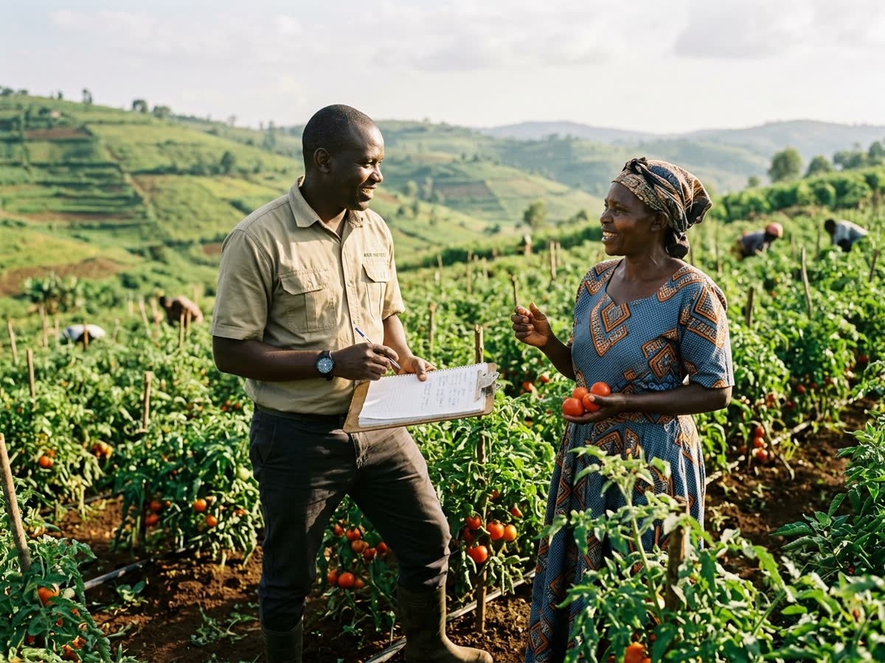

Step 01
Admin Field Onboarding
A field administrator registers each Kamonyi farmer once. Farmers cannot sign themselves up.
- Sector and phone number are recorded
- Language is set to English or Kinyarwanda
- Records are deactivated, never deleted